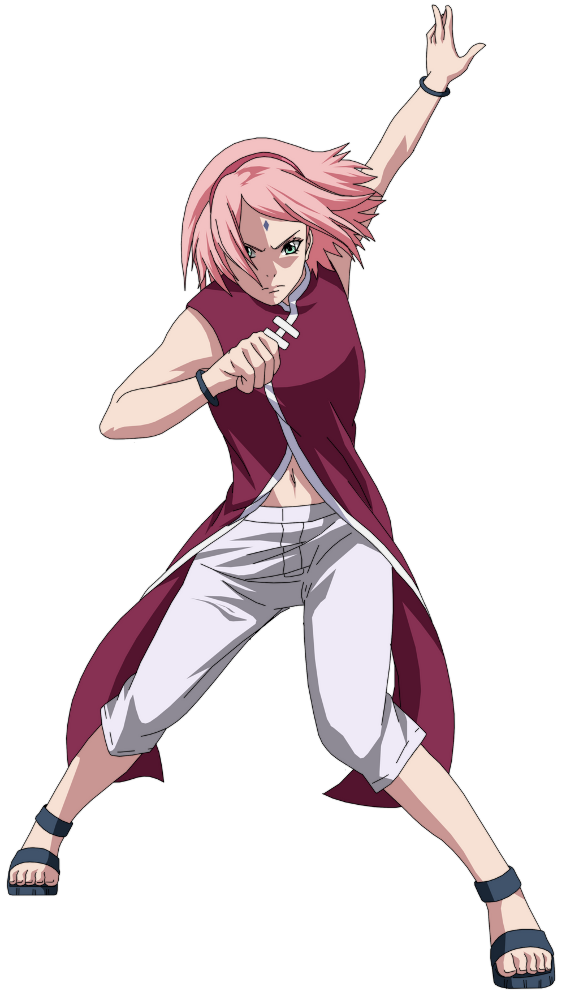
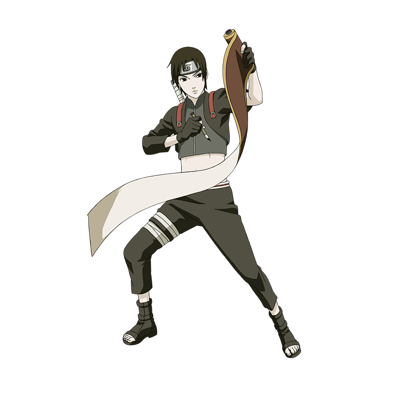
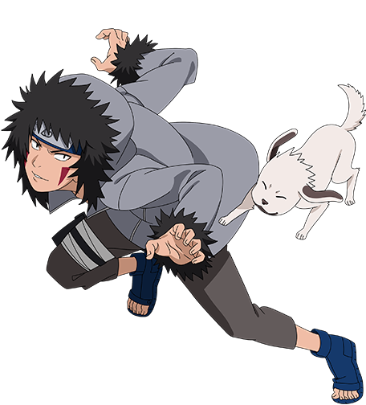
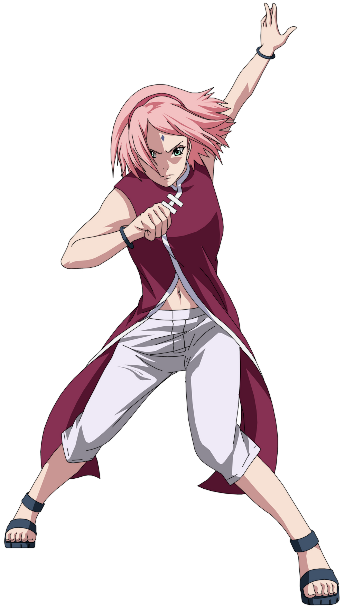
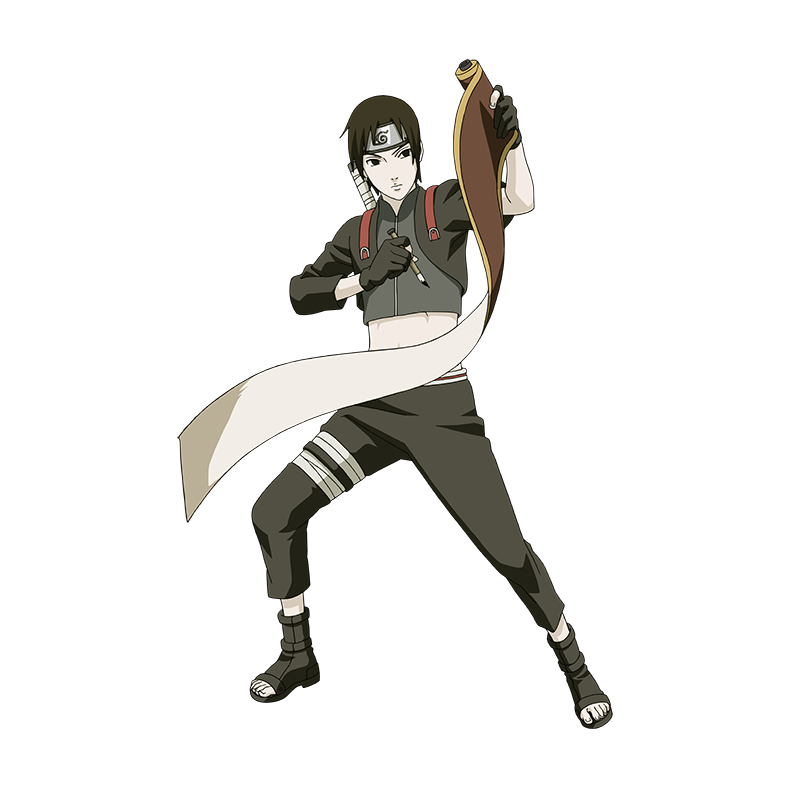
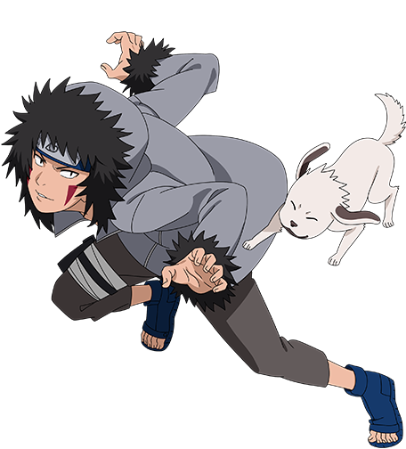

SASUKE
Sasuke Uchiha
(うちはサスケ Uchiha Sasuke) adalah seorang karakter fiktif dari komik dan anime Naruto. Nama depan Sasuke, konon berasal dari nama seorang ninja legendaris, Sarutobi Sasuke. Sedangkan nama belakangnya, "Uchiha" dibaca sebagai "uchiwa", atau "kipas kertas" (kipas yang terbuat dari kertas). Pada zaman Jepang Kuno, uchiwa sering kali dipakai dalam upacara kerajaan, sebagai suvenir, atau digunakan untuk melindungi prajurit dari serangan anak panah. Namun, menurut filosofi dalam komik Naruto, "uchiwa" adalah sebuah kipas yang mampu mengobarkan bara menjadi api, yang menggambarkan kemampuan klan Uchiha yang mampu mendidik keturunan mereka menjadi seorang ninja yang hebat
 




